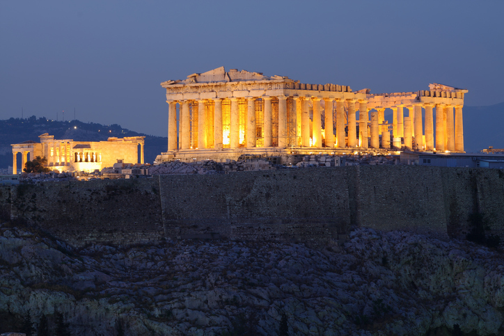

Lugares e Eventos Míticos
Os locais da mitologia grega são repletos de significado. Eles não são apenas cenários, mas representam os desafios, as lições e os destinos das personagens mitológicas.
Monte Olimpo - O Lar dos Deuses
O Monte Olimpo é o centro do cosmos grego, onde os deuses residem. Além de ser a morada de Zeus e seus filhos, o Olimpo é também o palco das disputas divinas que moldam o destino dos mortais. O Olimpo representa a distância entre o humano e o divino, e é frequentemente o local de grandes conselhos divinos e decisões que alteram o curso dos eventos terrestres.
O Mundo Subterrâneo - O Reino de Hades
O submundo é governado por Hades e sua esposa Perséfone. Ele é dividido entre várias regiões, como os Campos Elísios (onde os justos encontram paz) e o Tártaro (onde os condenados sofrem). A travessia para o submundo, como a de Orfeu e Eurídice, é um símbolo da morte e da busca pela vida após a morte.
Rituais e Cultos
A mitologia grega não se limita apenas às histórias; ela também se entrelaça com práticas religiosas. Os gregos realizavam rituais dedicados a seus deuses em templos e altares, como os Jogos Olímpicos, que eram em homenagem a Zeus, ou os rituais em Delfos, onde se buscavam respostas divinas por meio do Oráculo.
O Legado da Mitologia Grega
A mitologia grega teve uma influência duradoura na arte, literatura, filosofia e até nas ciências modernas. De Platão a Freud, de Homero a Shakespeare, os mitos gregos moldaram a imaginação e o pensamento ocidental.
O labirinto de Creta
O famoso labirinto onde o Minotauro estava preso foi construído por Dédalo, um mestre artesão, e foi projetado de forma tão complexa que ninguém conseguia sair de lá depois de entrar.
As Moiras
As Moiras eram três irmãs que controlavam o destino de todos, incluindo os deuses. Elas eram Cloto (a que fiava o fio da vida), Láquesis (a que mediava o comprimento do fio) e Átropos (a que cortava o fio da vida). Ninguém podia escapar do seu poder.
Pandora e sua caixa
Pandora, a primeira mulher criada pelos deuses, recebeu uma caixa (ou jarro, dependendo da versão) e foi instruída a não abri-la. Mas ela cedeu à curiosidade e, ao abrir, liberou todos os males da humanidade. O único "bem" que ficou dentro foi a esperança.
O mito do cavalo de Troia
Durante a Guerra de Troia, os gregos usaram um enorme cavalo de madeira, no qual esconderam soldados. Os troianos, pensando que era uma oferta de paz, trouxeram o cavalo para dentro da cidade. Durante a noite, os soldados saíram de dentro e abriram os portões para o exército grego.
A história de Narciso
Narciso era um belo jovem que se apaixonou pela sua própria imagem refletida na água. Ele ficou obcecado e, sem conseguir se afastar, acabou morrendo ali, transformando-se em uma flor, a narciso
.A guerra de Gigantes
Uma das batalhas mais impressionantes da mitologia grega foi a Guerra dos Gigantes, na qual os deuses lutaram contra gigantes monstruosos. Muitos desses gigantes eram filhos de Gaia, a deusa da Terra, e seus corpos eram tão grandes e poderosos quanto os dos próprios deuses.